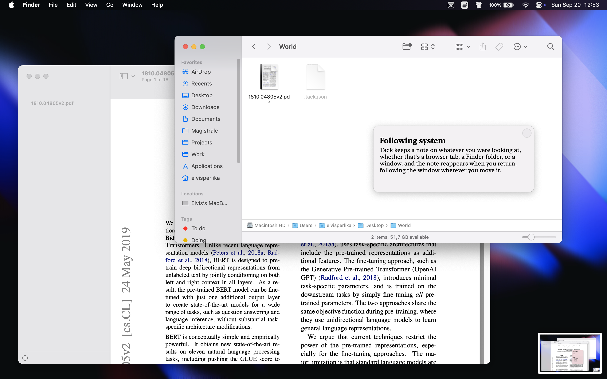
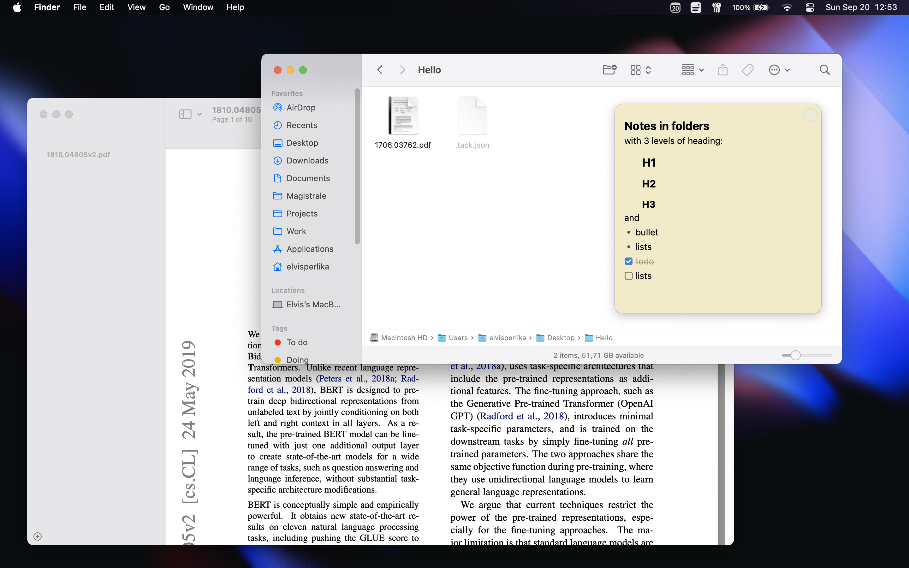
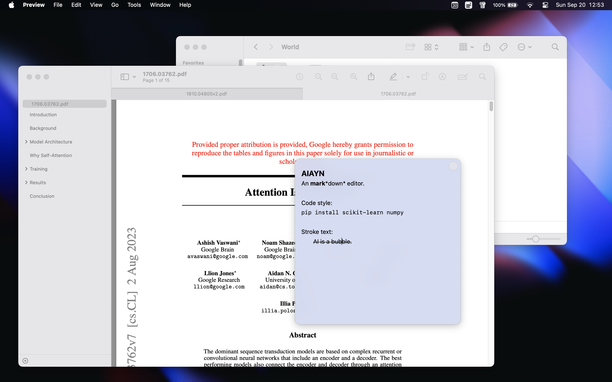
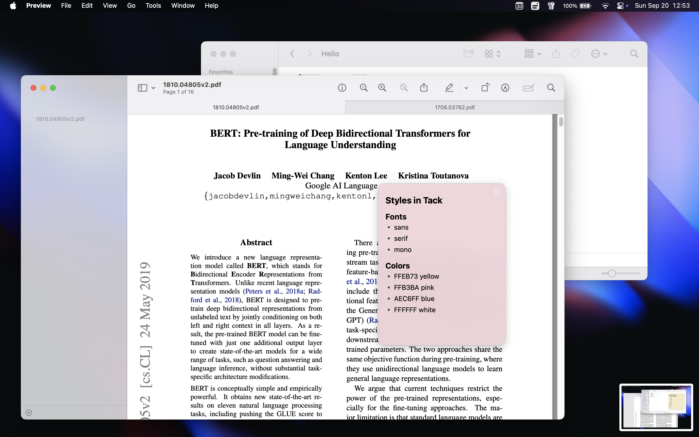
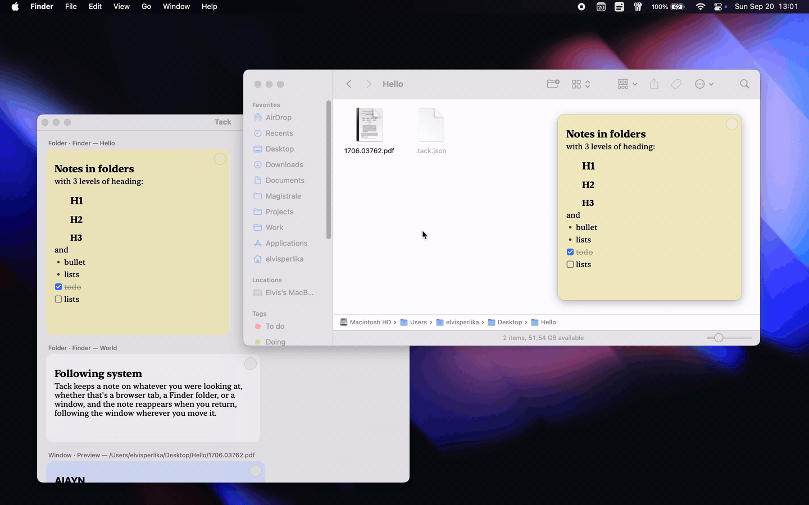
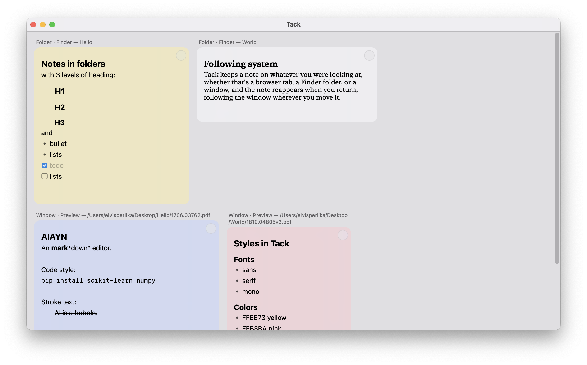

Reading list
- ☑ export the figures
- ☐ skim §3 before Friday
- ☐ email the draft
Tack sits in your menu bar. Pin a note to a Finder folder, a PDF or a browser tab, and it follows that window around the screen — only there when you are.
Folder · Finder — Papers
Window · Preview — thesis.pdf
Focus a window, click 📌 → Add note here. The note appears in the middle of it. Drag it wherever you want — it can't leave the window, and when the window gets small the note shrinks to fit, then grows back.

Window · Finder — World
Drag the window and the note comes along, frame for frame. Switch to another app and the note leaves with it. Come back and it's waiting in the same corner you left it.
Folder · Finder — /Desktop/World
Notes on a Finder folder are kept inside it. Move the folder, copy it to a drive, sync it to another Mac — the note is still there when you open it.
Tab · Safari — developer.apple.com
In Chrome, Safari and Arc a note belongs to the page rather than the window, so every tab carries its own and finds it again after a restart. Terminal tabs get the same treatment — a note stays with its tab through the whole session.
Window · Preview — 1810.04805v2.pdf
Write **bold**, `code` or ## and the markers disappear as you go, leaving the formatting behind. - makes a bullet, [] makes a checkbox you can click to tick.
Every line is its own block, the way Notion works: Enter starts the next one, the arrows walk between them, Esc steps out to select a whole block, and ⌘Z brings back anything you delete.


Window · Tack
A small glass dot sits in the note's corner. Rest on it and it opens into the pickers: the system sans, New York, or mono — each one spelled out in its own face so you read it before you pick it — and the colours.
Right-click the card for the rest: the full swatch grid, where you can add or drop colours, and how widely the note should show — this window, this tab, or everywhere in the app.

Window · Tack
📌 → Open Tack (⌘O) shows everything you've written, each card under the window, tab or folder it belongs to. Edit one here and it updates on its own window as you type. ⌘-click a card's header and Tack brings that folder or tab back to the front.


Grab the zip for your Mac from the latest release — apple-silicon or intel — unzip it, and right-click → Open the first time. The build is signed by a robot rather than a company, so Gatekeeper asks once.
On first launch macOS asks for Accessibility access and permission to control Finder. That's how a note keeps up with its window. Grant both and the 📌 shows up in your menu bar.
Or build it yourself:
git clone https://github.com/elvisperlika/tack.git cd tack && ./bundle.sh && open Tack.app